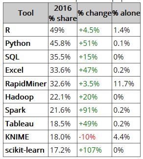
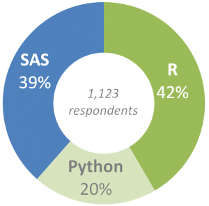

The decision to use R or Python for data science is a topic rich with different opinions. The diatribe espousing different viewpoints is sometimes opinionated and vicious; other times it is controlled and thoughtful. Mostly, I think it is a waste of time. Why? Both programming languages are capable. To perform collect and transform data, do statistical analysis, build models or create informative visualizations are supported by both environments. Most data scientists can perform their work in either environment. So what’s the difference?
For me it was simple. Besides R being the first true data-centric language I was exposed to in my first online course, R provides a rich, large and growing library of packages (10,000+) – many more than any other programming competitor including Python. Want to see a list of all the packages?
Packages are collections of R functions, data and compiled code in a well-defined format. The directory where packages are stored is called the library. R comes with a standard set of packages. Others are available for download and installation.
Why is the number of packages relevant? What smartphone do you have? If the application you need is not available, isn’t that a problem? (It is for me. I am still Windows 10 mobile and the dearth of applications is making me rethink my next smartphone manufacturer.)Because R provides 1,000’s more packages than competing platforms, it is an obvious choice for me. There is a package I can leverage for any issue or problem that arises. I view this as a significant reason to select R over Python, SAS, and all others.
This does not mean there is anything wrong in using Python, especially if you need to build applications beyond hardcore data science. Many argue Python is easier – and that might be true – R is sometimes unforgiving and can be daunting to learn initially. However, the richness of the package ecosystem overcomes the objections for millions of R users.
Is R more popular? Well, it depends. If you look at programming languages overall - without focusing on data science, the answer is probably no. Python, as a general purpose programming language is more popular than R. This makes sense. Very few of us would select R to write a CRM or ERP solution. But R does not lag far behind:

When you look at popularity by discipline, in our case data science, R appears to be leading all other languages:
Here is another source suggesting R leads in data science programming languages:
So which do you choose? My recommendation is if you are focused on data science, you cannot go wrong with R. If you are a programmer with more broad intentions, perhaps Python is a better choice for you. Be aware, you may miss some of the rich functionality provided by the R package ecosystems lacking on alternative solutions. What do you think?
So which do you choose?
Update 3/2/17: Here is a more current R v Python report. And here is a nice infographic.